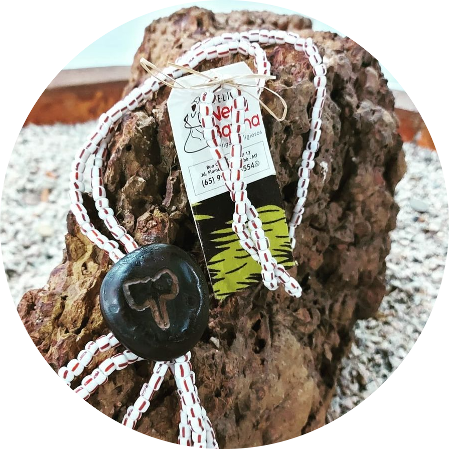
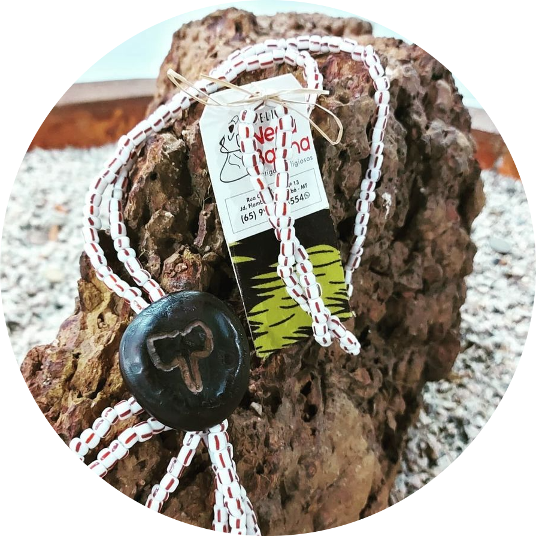

Ateliê especializado em produtos artesanais, esotéricos e muita magia Carregada de amor e asé.
Das Águas do coração de Mamãe Oxum, com a energia e o axé da baiana, nasceu o Ateliê Nega Baiana. Uma organização sem fins lucrativos, onde toda a arrecadação da renda é revertida para a Tenda Espírita Caboclo 7 Flechas localizada na cidade de Cuiabá, capital de Mato Grosso, com o objetivo de melhorar as instalações físicas e fazer a manutenção do espaço para continuarmos na missão de fazer o bem sem olhar a quem, podendo assim renovar a energia dos Orixás e dos Guias, fazendo com que o amor, o axé e a prosperidade estejam sempre presente nos dias daqueles que buscam o auxiliam da espiritualidade!
UM MUNDO DE ASÉ
 


O QUE VC ENCONTRA ESTÁ AQUI!
No Ateliê Nega Baiana, você vai encontrar os mais variados artigos religiosos de Umbanda e Candomblé, como amuletos de proteção, guias, terços, chaveiros, sabonetes, banhos e muito mais!
Teremos aqueles preparados de ervas pra te ajudar no amor, no trabalho, na abertura de caminhos financeiros, e também para fazer a limpeza no seu ambiente, tudo isso feito com muita dedicação e carinho!
Além de poder cuidar dos caminhos espirituais, profissionais e amorosos, você também vai encontrar artigos para te deixar espalhando ainda mais brilho, luz e beleza por aí, pois teremos roupas femininas e masculinas com aquelas estampas alegres dos tecidos africanos, acessórios, bolsas e bijuterias! Porque além de estar protegido, encontrar um grande amor e ter sucesso profissional, você também precisa fazer sucesso no visual!
Venha conhecer o Ateliê Nega Baiana, chame os amigos e amigas, e nos ajude a movimentar essa energia!